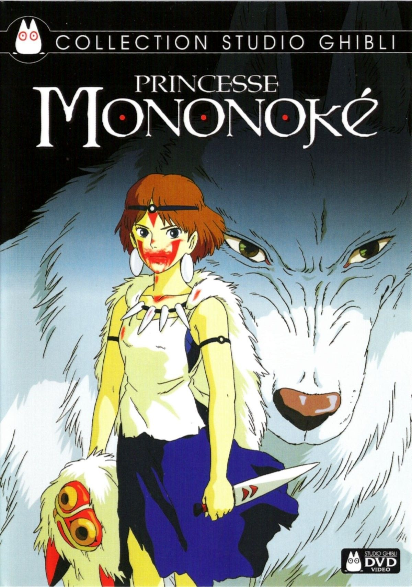
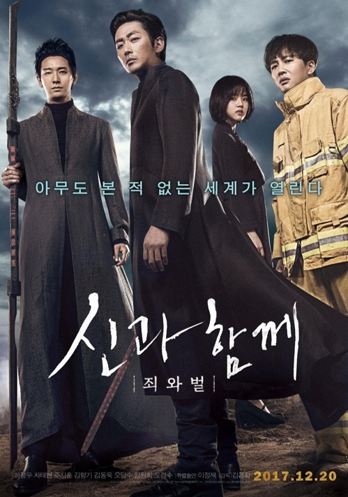

Shantal Carolina Sánchez Ramírez
Direccion:
SDE, Aut. San Isidro. ///
Tel:
809-748-9155
DATOS GENERALES
Fecha de nacimiento:
21/03/2002
Cedula:
011-2015488-7
Nacionalidad:
Dominicana
Email:
shasanr@hotmail.com
EDUCACION
Estudios secundarios:
Centro Educativo San Elias (2019)
Estudios universitarios:
UTESA, Ingenieria en sistemas computacionales, Sexto cuatrimestre, (Desde el 2020).
Estudios de idioma:
Ingles de Inmersion de la Mescyt, clases impartidas por el Dominico Americano (2020).
EXPERIENCIA LABORAL
No poseo una experiencia laboral pero, si cuento con una capacidad de aprendizaje rápida y disciplina.
IDIOMAS
Español, nativo
Ingles, intermedio
PASATIEMPOS
Entre mis pasatiempos preferidos estan:
Leer
Dibujar
Salir de paseo y/o viajar
Pasar tiempo en familia
Ver peliculas y series asiaticas
PELICULAS FAVORITAS
Entre mis peliculas favoritas estan:
La princesa Mononoke (Studio Ghibli)
Piratas del caribe (toda la serie de esta)
Along with the Gods: The Two Worlds (la primera y la segunda parte)
 
MI VIDEO DEL FUTURO
En un futuro me gustaria viajar a otros paises y uno de los principales seria Corea del Sur.